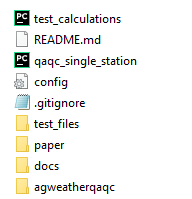

Data Preparation
agweather-qaqc requires a config file that specifies what weather variables are being provided, where in the data file they are located, and what units they are in. Most weather stations from the same network or source have the same format for their data, so this process may only have to be done once for multiple stations.
All of this is accomplished through the parameters specified in config.ini.
Program Flow
{kind=link}
The path to the input data file for agweather-qaqc is one of the components of the configuration file. If a metadata file is also provided, the path to the input data will be pulled from there instead. See below for more information.
Directory Structure
{kind=link}
Assuming you have cloned the github directory, your folder should contain the following items:
The “agweatherqaqc” directory - contains module code and the environment.yml file.
config.ini - configuration file used by the script to interpret the contents of the data file.
qaqc_single_station.py - a wrapper script that enables to you use this module from the CLI. Your icon may not match what is pictured here.
A .csv, .xls, or .xlsx data file - file with the weather station data to process. In this example, it is located within the “test_files” folder.
When the file qaqc_single_station.py is run, it looks for the config.ini file within the same folder and starts pulling all the relevant information from that config file. See Running agweather-qaqc for more options.
The github repository includes an example data file and a matching config.ini that is already set up to be run.
Note
agweather-qaqc saves all of the output files in the same directory as the input data file.
Setting up the Config File
The configuration file “config.ini” can be broken down into 3 sections:
METADATA
The top section of the config.ini file is where you will specify the metadata of both the weather station the data came from, as well as information about the data file unrelated to measured variables. This includes things like the station’s geographical location and whether or not the file has a header.
OPTIONS
The next section of the config.ini file is where you will specify what options you want the script to run with. As an example, whether or not you wish to fill in missing data. The settings in this section are either set to “0” (indicating FALSE, or NO) or “1” (indicating TRUE, or YES).
DATA
The majority of work in setting up the config.ini file is done in this section, where we specify what variables are in which columns of data, and what units those variables are in. The configuration file has explanations for the various prompts in this section.
In Python, indexes start at 0., If an .xlsx data file has Maximum Temperature data was in Column A, the appropriate setting would be “TEMPERATURE_MAX_COL = 0”. If Solar Radiation data was in Column E, the appropriate setting would be “SOLAR_RADIATION_COL = 4”, and so on.
A note on humidity data:
Humidity is commonly measured through either:
Actual Vapor Pressure (Ea)
Dewpoint Temperature (TDew)
Maximum and Minimum Relative Humidity (RHMax and RHMin)
Average Relative Humidity (RHAvg)
In terms of accuracy, this is a tiered list where the top option (Ea) is most desirable, and the bottom option (RHAvg) is the least. When configuring humidity measurements, input all the variables you may have, and the script will automatically pick the most preferable option.
Setting up the Metadata File
Setting up a metadata file is an optional step that may save time depending on how many datafiles need to be processed. When this metadata file is setup, the software will iterate through all the lines of files contained within it, so that you do not need to manually change the config file parameters for each station.
There is an example metadata file in the test_files folder, which is shown here:

The metadata file is required to have the following named columns, which need to be filled out:
index - 1 to N, where N is the number of stations you have to process
id - ID for that station, may be a letter or string, that is used by the network
station_name - Name of that station
latitude - Latitude of the station in decimal degrees
longitude - Longitude of the station in decimal degrees
elev_m - Elevation of the station in meters
anemom_height_m - Height in meters of the station’s anemometer
input_path - path to the data file for the station, either absolute or relative to the file qaqc_single_station.py
processed - this column should be filled with 0’s before starting. This column is to track which stations have been run.
The following columns are required within the metadata file, but will be filled out by the software:
record_start - Date at the start of the data file
record_end - Date at the end of the data file
output_path - relative path to the output file
Note
agweather-qaqc requires that the metadata column names exactly match what is found within the example metadata file. In addition, this file will be read from/written to when it is used, so if you have the file open in another program you will get a PermissionError.
Running agweather-qaqc
There are three options when running the software through the CLI:
Option 1:
>python qaqc_single_station.py
This will try to find a config file named, “config.ini” in the same directory as qaqc_single_station.py and read parameters from it.
Option 2:
>python qaqc_single_station.py <PATH_TO_CONFIG_FILE>
This will try to open the config file located at the specified path and read parameters from it.
Option 3:
>python qaqc_single_station.py <PATH_TO_CONFIG_FILE> <PATH_TO_METADATA_FILE>
This will try to open the config file located at the specified path and read parameters from it, while also reading station metadata from the metadata file. This final option will allow for rapidly iteration through stations as one config file can serve as the key to interpreting any number of stations that share the same data structure or format.
Alternatively, you can create an instance of WeatherQC class directly if you wish to use it as part of a larger workflow.